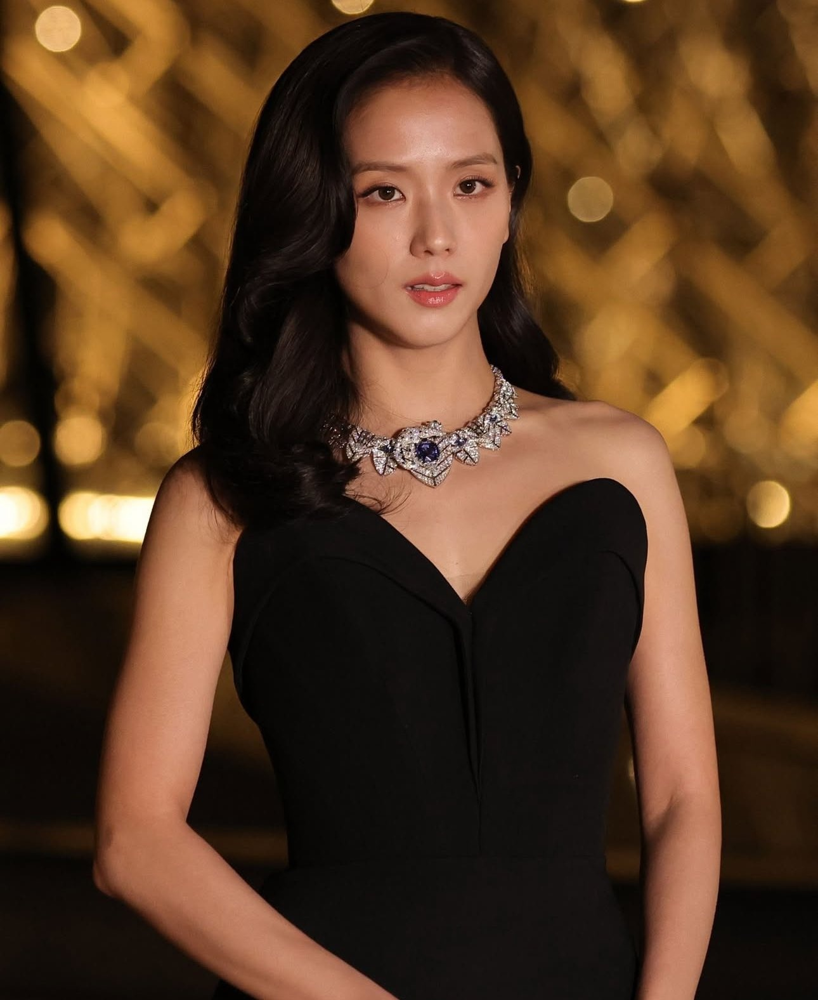
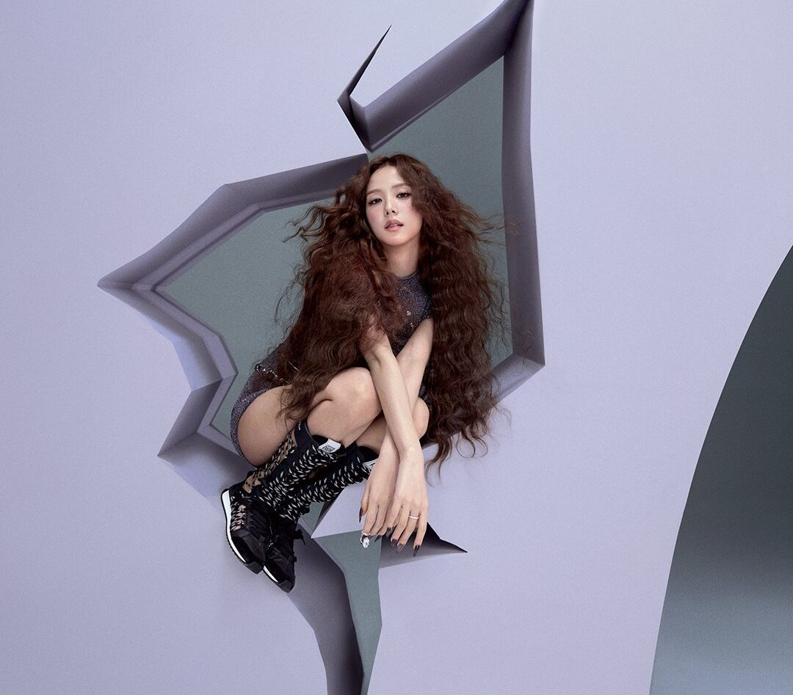
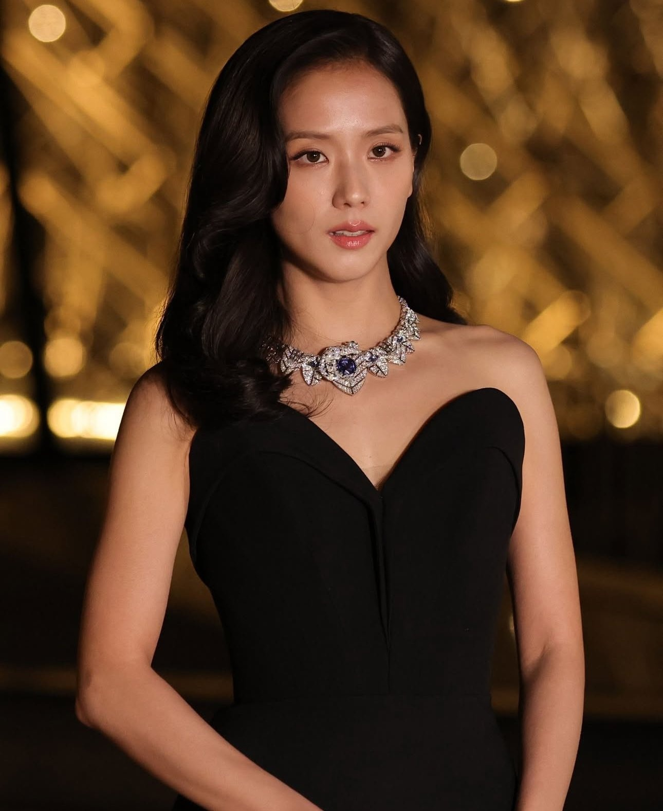
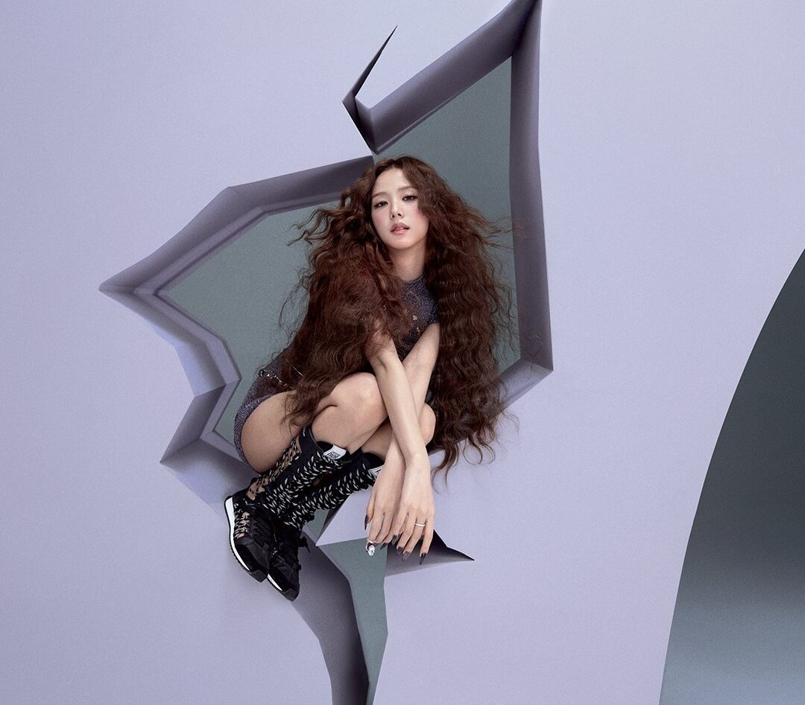

Kim Ji Soo
 





Stage name: Jisoo
Birth name: Kim Ji Soo
Nicknames: Chi Choo, Jichu
Position: Lead vocalist, Visual
Birthday: January 3, 1995
Zodiac sign: Capricorn
Birthplace: Gunpo, South Korea
Height: 5'3.75" (162 cm)
Facts:
- She was born in Gunpo, a city in the province of Gyeonggi, South Korea
- She trained for 5 years
- She was the third member to be revealed
- She can speak Korean, Japanese, basic Chinese, and basic English
- She understands English very well but is embarrassed to speak it
- She can play the Korean drum and piano
- She has a 4D personality
- She has a dog named Dalgom
- She has a white belt in taekwondo
- She was invested as an Honorary Member of the Order of the British Empire (MBE) by King Charles III with the other Blackpink members
Solo Activities:
- Starred in her first role as lead actress in Snowdrop.
- Debut single album Me
- Starred in "Newtopia" as the lead role
- Debut solo EP Amortage
- Slated to star in Onmiscient Reader:The Prophecy and Boyfriend on Board
- Established her oen label Blissoo
- Global ambassador of Dior and Tommy Hilfiger
- Brand ambassador for Cartier, MapleStory, and Dyson